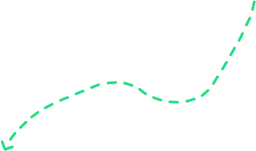

蜀绣简介

Introduction to Shu Embroidery
 蜀绣
蜀绣
 蜀绣
蜀绣
 蜀绣
蜀绣
蜀绣
 蜀绣
蜀绣
作品一览
List of works
01
蜀绣“五星出东方”中部
蜀绣“五星出东方”，是由北美知名插画师MarcosChin所创新性的现代设计，以新疆尼雅出土的“五星出东方利中国”...
02
蜀绣“五星出东方”中部
蜀绣“五星出东方”，是由北美知名插画师MarcosChin所创新性的现代设计，以新疆尼雅出土的“五星出东方利中国”...
03
蜀绣“五星出东方”中部
蜀绣“五星出东方”，是由北美知名插画师MarcosChin所创新性的现代设计，以新疆尼雅出土的“五星出东方利中国”...

04
蜀绣“五星出东方”中部
蜀绣“五星出东方”，是由北美知名插画师MarcosChin所创新性的现代设计，以新疆尼雅出土的“五星出东方利中国”...
05
蜀绣“五星出东方”中部
蜀绣“五星出东方”，是由北美知名插画师MarcosChin所创新性的现代设计，以新疆尼雅出土的“五星出东方利中国”...
新闻动态
News trends
成都市青羊区副区长龚昌华莅临成都蜀锦织绣博物馆
2024年5月28日，成都市青羊区副区长龚昌华莅临成都蜀锦织绣博物馆、蜀江锦院就蜀锦蜀绣产业发展工作情况进行现场调研，青羊区政府办、青羊区新经济和科技局、青羊区文体旅局等相关领导陪同调研。蜀锦织绣博物馆/蜀江锦院总经理杜予立向调研组详细介绍了成都蜀锦织绣博物馆及其旗下锦绣文化国礼品牌蜀江锦院的经营情况，着重介绍了博物馆响应蜀锦蜀绣高水平保护高质量发展战略而进行的第三期文旅新场景改造及大型蜀锦主题电视连续剧《蜀锦人家》项目在依托整个青羊区“文商旅融合锦绣文化”品牌的坚实基础和先天优势，以实际行动更好传承和弘扬蜀锦蜀绣这一国家级非物质文化遗产工作方面取得的成效情况。
甘孜轴德达藏服饰文化博物馆馆长段凤莲女士率领相关人员莅临我馆
3月4日下午，甘孜轴德达藏服饰文化博物馆馆长段凤莲女士率领相关人员莅临我馆，展开了一场交流学习之旅。我馆馆长钟秉章亲自接待访问团，并带领他们参观了我馆的各个展区。 在参观过程中，钟馆长详细介绍了我馆的历史背景、馆藏特色以及珍贵的蜀锦蜀绣文物。他特别强调了对蜀锦活态技艺的传承与保护，并向来访者展示了我馆在这一领域所取得的显著成就。 随后，我馆在会议室举行了一场分享会。钟馆长分享了我馆创办以来的丰富经验，包括文创产品开发、讲解员培训以及研学项目的开发等方面。她表示，博物馆作为文化传承与展示的重要平台，应当不断创新，以满足公众日益增长的文化需求。 在分享会上，双方还就未来可能的合作进行了深入的探讨。我馆表示愿意在文创产品设计、讲解员队伍建设以及研学项目开发等方面提供经验帮扶与合作支持。 此次参观考察活动不仅加深了两馆之间的了解与友谊，也为双方未来的合作奠定了坚实的基础。我馆将继续发挥自身优势，帮扶藏服博物馆建设，为推动博物馆事业的繁荣与发展贡献力量。
第四届中国工艺美术博览会在福建福州拉开帷幕
2024年5月9日，第四届中国工艺美术博览会在福建福州拉开帷幕。与此同时，由中国轻工业联合会、北京非物质文化遗产发展基金会共同举办的“首届传统工艺大国非遗工匠推荐学习活动”在第四届中国工艺美术博览会上精彩亮相，活动在福州海峡国际会展中心举行。博览会期间同期举办第四届“百鹤杯”工艺美术设计创新大赛。 “百鹤杯”作为中国工艺美术界最高规格奖，旨在表彰凸显时代文化成就、代表国家艺术形象，展现工美艺术顶尖水平的各类优秀作品。四川展团共计提报31件参评作品，经过专家评委认真评选，共获得奖项7个，其中百鹤金鼎奖1个、百鹤奖2个、百鹤新锐奖4个。 成都蜀锦织绣博物馆、蜀江锦院彭世平大师的蜀绣作品《熊猫攀爬》脱颖而出，斩获本届“百鹤杯”工艺美术设计创新大赛最高奖项百鹤金鼎奖，也是本届“百鹤杯”四川省唯一获得百鹤金鼎奖的参赛作品。彭大师本人更是被大会授予中国工艺美术“传统工艺大国非遗工匠”荣誉称号。